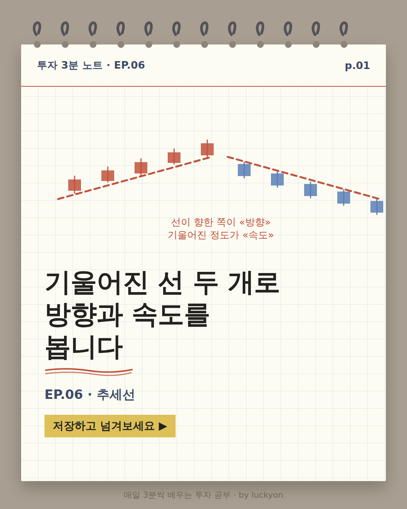
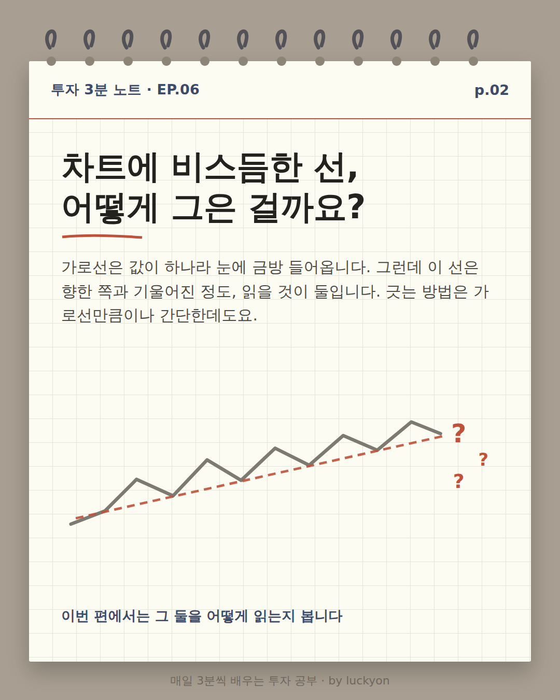
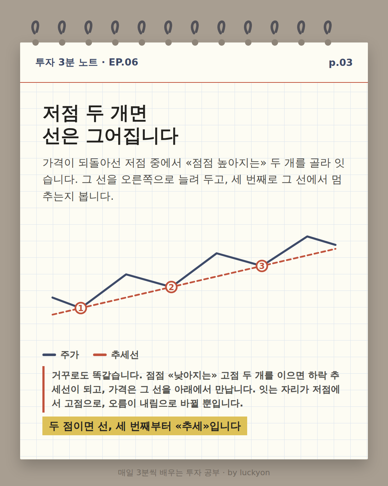
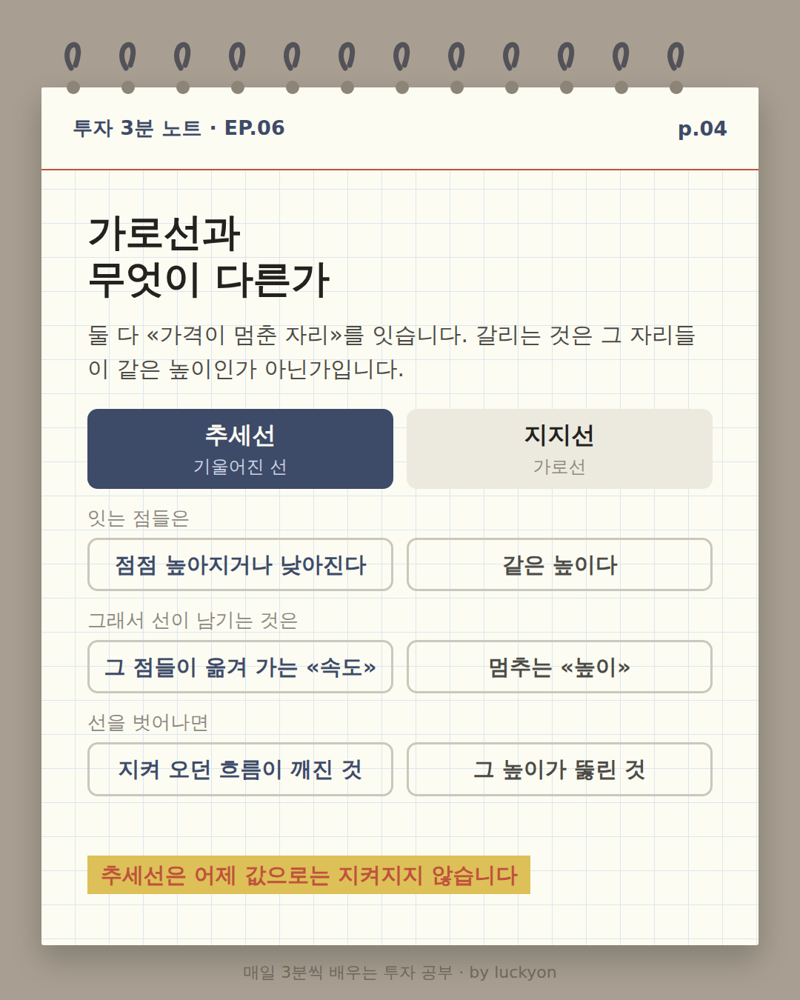
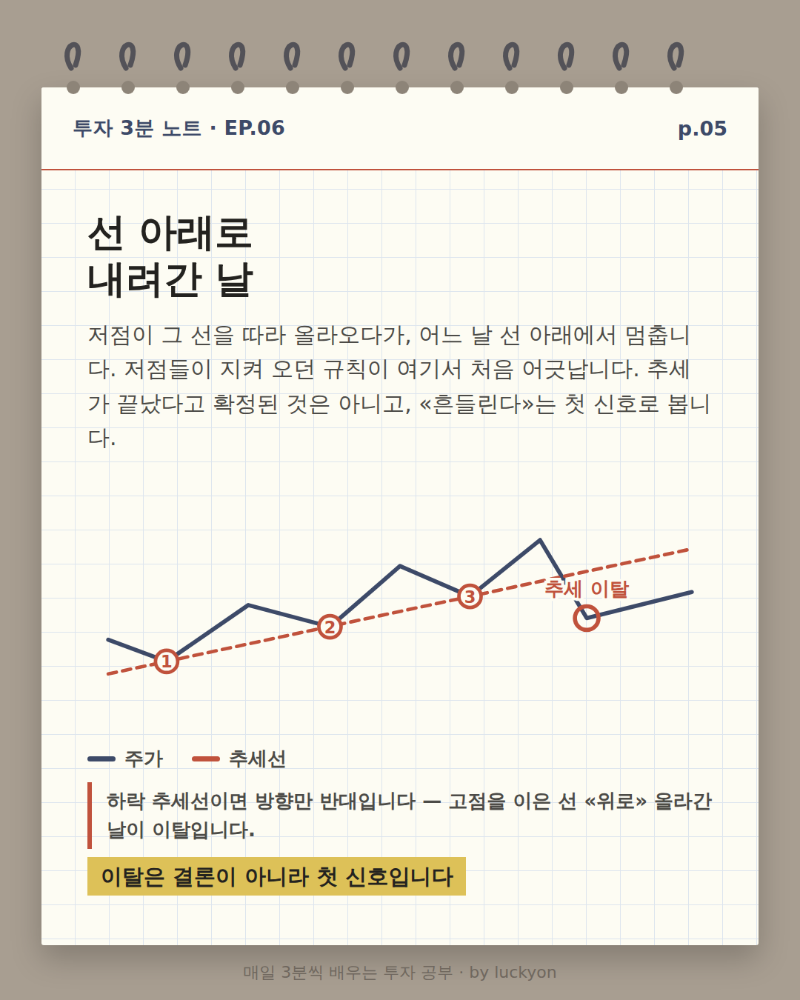
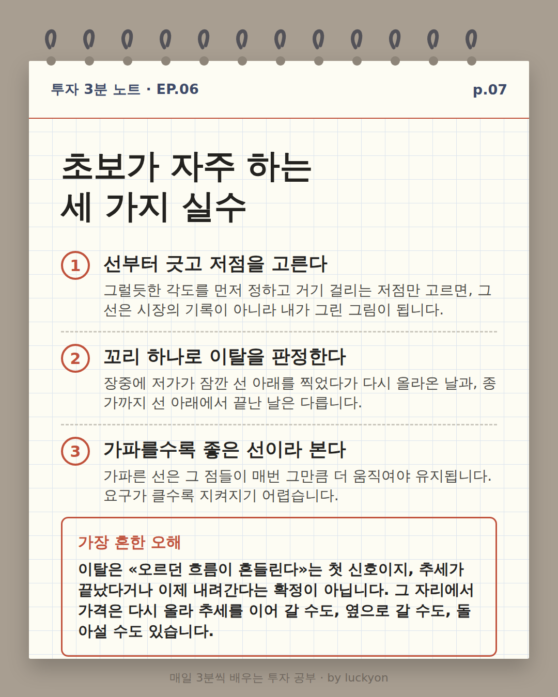
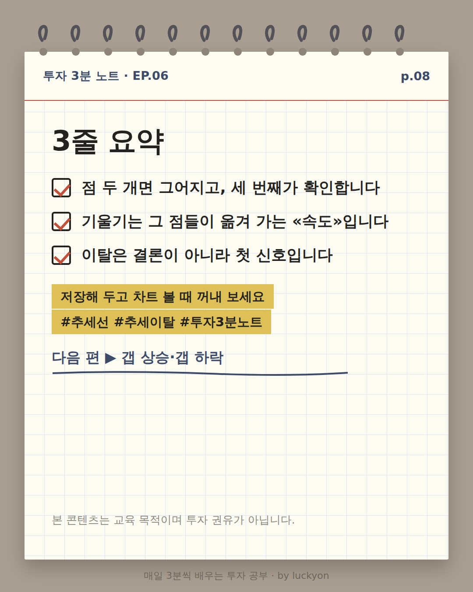
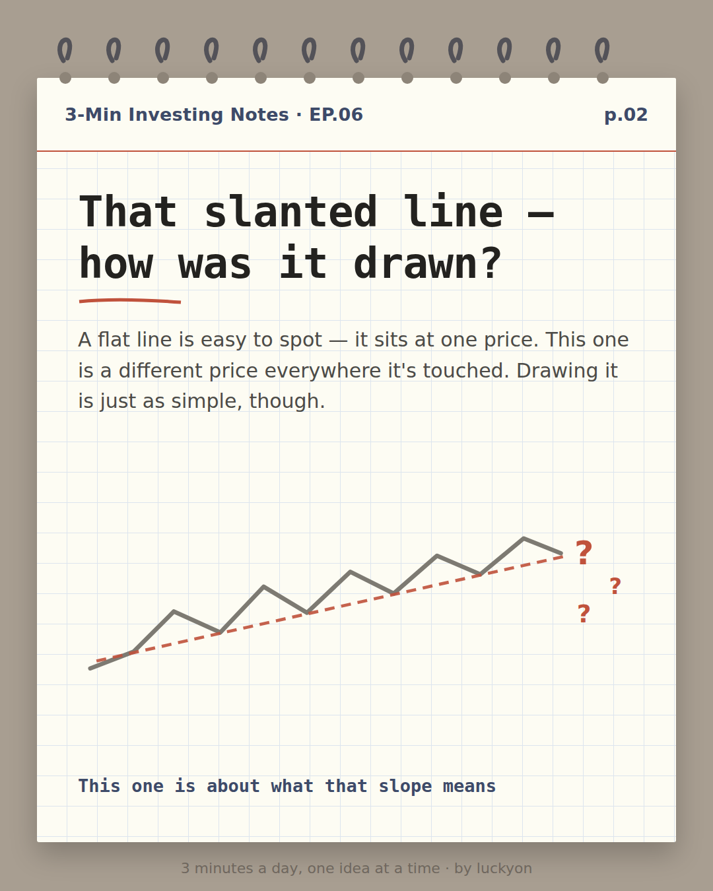
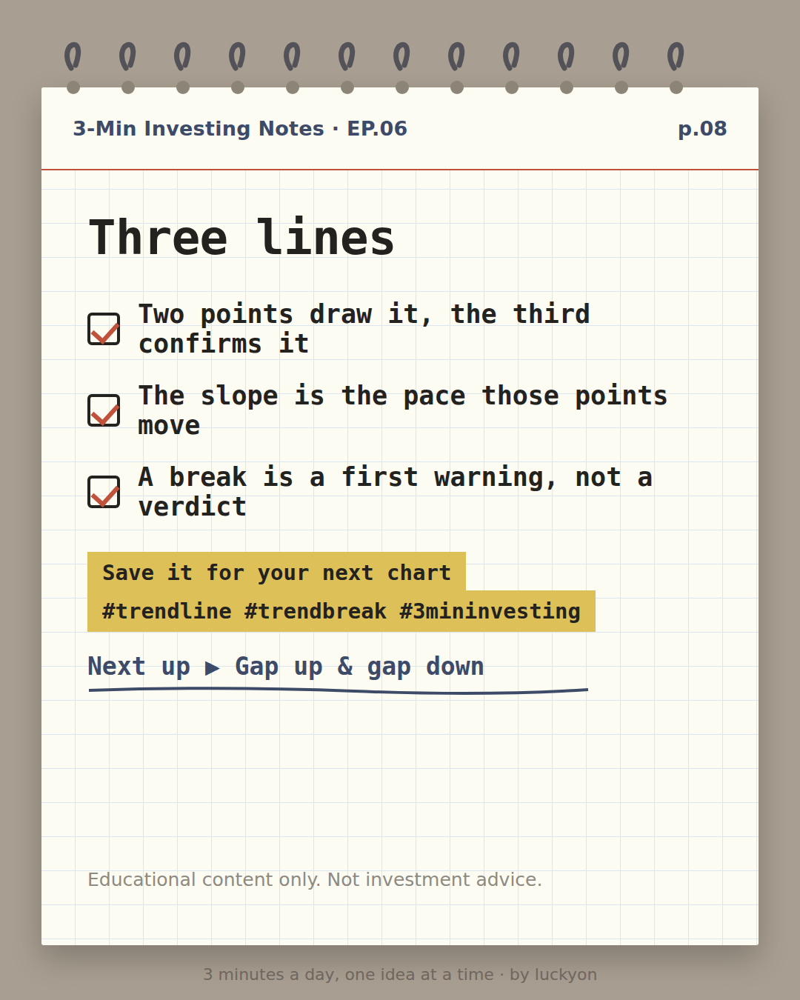

버튼을 누르면 GitHub 이슈 작성 화면이 열립니다. 내용은 미리 채워져 있으니 제출(Submit)만 누르시면 됩니다.
제출하면 다음 확인 루틴이 읽고 처리한 뒤, 결과를 카카오톡으로 알려드립니다.
시세 검증 기록
KO — 삼성전자(005930.KS) 일봉을 UsStockInfo 원본과 대조. KRX 일봉의 15:00Z 표기는 KST 다음 날 00:00 이므로 거래일 = 표기일 +1 로 환산했고, 8/15~8/17(광복절·대체공휴일 포함) 자리가 정확히 비어 있는 것으로 오프셋을 교차검증했다(EP.05 와 같은 결과). 배당 미조정 실제 호가만 썼다 — 표기 2026-06-28 봉(Dividends 374)부터 값이 정수로 떨어지고 그 이전은 조정값이라 제외했다. p.06 에 실은 2026-07-30 ~ 08-28 21개 봉의 시·고·저·종·거래량 전부 원본과 자릿수까지 일치. 추세선 근거: 7/30 저가 202,000원과 8/11 저가 227,500원을 이었고 두 날은 8거래일 간격이라 기울기는 하루 3,187.5원이다. 늘리면 8/24 자리 값이 202,000 + 3,187.5×16 = 253,000원이고 그날 실제 저가는 255,000원(선보다 2,000원 위)으로, 세 접점을 뺀 나머지 중 가장 근접한 날은 8/19 로 선보다 3,062.5원 위다. 이탈: 8/25·8/26·8/27 은 저가만 선 아래(각각 11,187.5 / 3,875 / 62.5원 아래)이고 종가는 모두 선 위였으며, 8/28 에 종가 257,000원이 선(265,750원)보다 8,750원 아래에서 끝나 종가 기준 이탈이 확정됐다. 9/4 까지 회복 없음. 왼쪽 끝을 7/30 으로 잡은 근거: 화면에 실린 21봉 중 최저가가 7/30 의 202,000원이라 선의 왼쪽 끝이 프레임 안 실제 최저점이다(직전 7/29 저가 189,200원은 폭락 당일이라 구간 밖에 두었고, 카드는 그 값을 인용하지 않는다).
EN — AAPL daily bars checked against the UsStockInfo source (US bars are stamped 04:00Z = same trading day). Only unadjusted bars were used: the source's 2026-08-10 row carries the $0.27 dividend, so every bar from Aug 10 on is raw, and earlier rows (which are back-adjusted) were excluded. All 20 bars in p.06 (Aug 10 – Sep 4, 2026) match the source open/high/low/close/volume to the cent. Trendline evidence: the Aug 12 low of $300.57 joined to the Aug 17 low of $302.94 — 3 sessions apart, so the slope is $0.79 per session. Extended, the line sits at $309.26 on Aug 27, where the actual low was $309.40 — $0.14 above. Every low in the window was checked and none of them fell below the line; Aug 25 ($0.53 above) and Aug 26 ($0.33) also sit on it, and at the right edge (Sep 4) the line reads $300.57 + 0.79×17 = $314.00 against an actual low of $317.86. Unlike the Korean edition, this line was still unbroken at the right edge of the window.
🇰🇷 한국어 — 8장

p.01 표지. 크림색 모눈 노트 위에 캔들 여덟 개가 왼쪽 아래에서 오른쪽 위로 계단처럼 올라간다. 그 캔들들의 아래꼬리 끝을 따라 붉은 점선 하나가 비스듬히 그어져 있고, 여러 캔들의 저가가 그 선에 닿아 있다. 점선의 오른쪽 끝을 가리키며 '저점이 점점 올라왔다 — 그 자리를 이은 선'이라는 주석이 붙어 있다. 큰 제목 '기울어진 선 하나가 «움직이는 속도»를 말해 줍니다', 부제 'EP.06 · 추세선', 노란 형광펜 칩 '저장하고 넘겨보세요'.

p.02 도입 카드. 제목 '차트에 비스듬한 선, 어떻게 그은 걸까요?' 아래에 '가로선은 높이가 하나뿐이라 찾기 쉽지만 이 선은 닿는 자리마다 값이 다르다'는 본문이 있다. 그림은 회색 꺾은선이 왼쪽 아래에서 오른쪽 위로 오르내리며 올라가고, 그 저점들을 따라 붉은 점선 한 줄이 비스듬히 가로지른다. 점선이 끝나는 오른쪽 바깥에 붉은 물음표 세 개가 찍혀 «이 선이 어떻게 그어진 것이냐»고 묻는다. 맨 아래 '이번 편은 그 기울기가 무엇을 뜻하는지 봅니다'.

p.03 원리 카드. 감청색 꺾은선이 오르내리며 오른쪽 위로 올라가고, 그 저점 세 개를 지나는 붉은 점선이 왼쪽 아래에서 오른쪽 위로 비스듬히 그어져 있다. 선이 그 점선에 닿은 자리마다 붉은 동그라미 안에 번호가 매겨져 있다 — 왼쪽부터 ①②③. 본문은 되돌아선 저점 중 점점 높아지는 두 개를 골라 잇고, 그 선을 오른쪽으로 늘려 세 번째로 그 선에서 멈추는지 본다고 설명한다. 아래 범례에 감청색 '주가'와 붉은색 '추세선'. 그 아래 붉은 세로줄이 그어진 문단에 '거꾸로도 똑같습니다. 점점 «낮아지는» 고점 두 개를 이으면 하락 추세선이 되고, 가격은 그 선을 아래에서 만납니다. 잇는 자리가 저점에서 고점으로, 오름이 내림으로 바뀔 뿐입니다.' 노란 형광펜 마무리 문구는 '두 점이면 선, 세 번째부터 «추세»입니다'.

p.04 비교 카드 '가로선과 무엇이 다른가'. 왼쪽에 감청색으로 칠해진 '추세선 · 기울어진 선', 오른쪽에 회색 '지지선 · 가로선' 머리칸이 있고 아래로 세 줄이 맞대어 있다. '잇는 점들은' — 점점 높아지거나 낮아진다 / 같은 높이다. '그래서 선이 남기는 것은' — 그 점들이 옮겨 가는 «속도» / 멈추는 «높이». '선을 벗어나면' — 지켜 오던 흐름이 깨진 것 / 그 높이가 뚫린 것. 노란 형광펜 마무리 문구는 '추세선은 어제 값으로는 지켜지지 않습니다'.

p.05 추세 이탈 카드. 감청색 꺾은선이 붉은 점선 추세선을 따라 올라가며 세 번 그 선에서 멈추고, 멈춘 자리마다 붉은 동그라미 ①②③이 붙어 있다. 그러다 오른쪽에서 선이 꺾여 내려오면서 이번에는 점선 «아래»에서 멈추고, 그 지점에 번호 없는 붉은 동그라미와 '추세 이탈'이라는 라벨이 붙어 있다. 이후 선은 점선 아래에 머문 채 오른쪽으로 이어진다. 본문은 저점들이 지켜 오던 규칙이 여기서 처음 어긋나지만 추세가 끝났다고 확정된 것은 아니며 «흔들린다»는 첫 신호로 본다고 설명한다. 그림 아래 붉은 세로줄이 그어진 문단에 '하락 추세선이면 방향만 반대입니다 — 고점을 이은 선 «위로» 올라간 날이 이탈입니다.' 노란 형광펜 마무리 문구는 '이탈은 결론이 아니라 첫 신호입니다'.p.06 실제 사례 카드. 삼성전자 2026년 7월 30일부터 8월 28일까지 스물한 개의 일봉과 그 아래 거래량 막대가 두 칸으로 그려져 있다. 7월 30일 저가에서 시작해 오른쪽 위로 올라가는 붉은 점선 추세선이 그어져 있고 그 아래에 '추세선' 라벨이 붙어 있다. 붉은 동그라미 번호가 세 곳에 있다 — ①은 7월 30일 저가 20만 2,000원, ②는 8월 11일 저가 22만 7,500원, ③은 8월 24일 저가 25만 5,000원 자리다. 8월 24일까지는 어느 날의 저가도 점선 아래로 내려가지 않는다. 그 뒤 8월 25·26·27일은 아래꼬리 끝만 점선 아래로 내려갔다가 몸통은 위에서 끝나고, 맨 오른쪽 8월 28일 봉에는 종가 25만 7,000원 자리에 번호 없는 붉은 동그라미와 '종가 이탈' 라벨이 붙어 있다 — 이 자리는 점선보다 뚜렷이 아래다. x축에는 7/30, 8/3, 8/6, 8/11, 8/14, 8/19, 8/24, 8/28 이 찍혀 있다. 마무리 문구 '꼬리가 아니라 종가가 내려간 날을 이탈로 봅니다'.

p.07 실수 카드. 번호 붙은 세 항목. 1. 선부터 긋고 저점을 고른다 — 그럴듯한 각도를 먼저 정하고 거기 걸리는 저점만 고르면 시장의 기록이 아니라 내가 그린 그림이 된다. 2. 꼬리 하나로 이탈을 판정한다 — 장중에 저가가 잠깐 선 아래를 찍었다가 다시 올라온 날과 종가까지 선 아래에서 끝난 날은 다르다. 3. 가파를수록 좋은 선이라 본다 — 가파른 선은 그 점들이 매번 그만큼 더 움직여야 유지되므로 요구가 클수록 지켜지기 어렵다. 아래 붉은 테두리 상자에 '가장 흔한 오해 — 이탈은 «오르던 흐름이 흔들린다»는 첫 신호이지, 추세가 끝났다거나 이제 내려간다는 확정이 아닙니다. 그 자리에서 가격은 다시 올라 추세를 이어 갈 수도, 옆으로 갈 수도, 돌아설 수도 있습니다'.

p.08 요약 카드. 체크박스 세 줄: 점 두 개면 그어지고, 세 번째가 확인합니다 / 기울기는 그 점들이 옮겨 가는 «속도»입니다 / 이탈은 결론이 아니라 첫 신호입니다. 노란 형광펜 칩 두 개로 저장 유도와 해시태그, 그 아래 '다음 편 ▶ 갭 상승·갭 하락', 맨 아래에 교육 목적 고지.
캡션 (1111자)
차트에 비스듬하게 그어진 선, 대충 눈대중으로 그은 게 아닙니다.
가격이 되돌아선 저점 중에서 «점점 높아지는» 두 개를 골라 이으면 그게 추세선입니다. 두 점이면 선은 그어지고, 세 번째로 그 선에서 멈추는 날이 와야 «추세»가 됩니다.
이번 편에서 꼭 가져가셨으면 하는 것 하나. 가로선(지지선)과 추세선은 재는 것이 다릅니다. 가로선은 가격이 멈추는 «높이»를 남기고, 추세선의 기울기는 그 점들이 옮겨 가는 «속도»를 남깁니다. 그리고 가격이 그 선을 벗어난 날, 저점들이 지켜 오던 규칙이 처음으로 어긋납니다. 다만 그것으로 추세가 끝났다거나 이제 반대로 간다고 확정되지는 않습니다 — 되돌림이었다가 추세가 그대로 이어지는 경우도 있습니다. «흔들린다»는 첫 신호까지가 이 선이 말해 주는 전부이고, 이걸 «이제 떨어진다»로 읽는 것이 가장 흔한 오해입니다.
실제 삼성전자 일봉으로도 확인했습니다. 2026년 7월 30일 저가 20만 2,000원과 8월 11일 저가 22만 7,500원을 이어 오른쪽으로 늘렸더니, 8거래일 뒤인 8월 24일 저가 25만 5,000원이 그 선(25만 3,000원) 바로 위에서 멈췄습니다. 그리고 이 선이 어떻게 끝났는지도 함께 실었습니다 — 8월 25·26·27일은 꼬리만 선 아래를 찍고 종가는 위였지만, 8월 28일 종가 25만 7,000원이 선(26만 5,750원) 아래에서 끝나며 이탈이 확정됐습니다. 꼬리와 종가를 갈라 보는 이유가 여기 있습니다.
카드의 예시는 저점을 잇는 상승 추세선이지만, 거꾸로도 똑같습니다. 점점 «낮아지는» 고점 두 개를 이으면 하락 추세선이 되고, 가격은 그 선을 아래에서 만납니다. 이때는 선 «위로» 올라간 날이 이탈입니다. 잇는 자리가 저점에서 고점으로, 오름이 내림으로 바뀔 뿐 방법은 하나입니다.
기억할 세 가지 ① 저점 두 개면 그어지고, 세 번째가 확인한다 ② 기울기는 저점이 오르는 속도다 ③ 이탈은 결론이 아니라 «흔들린다»는 첫 신호다
p.01 Cover. On cream grid paper, eight candlesticks step up from the lower left to the upper right. A single red dashed line runs diagonally beneath them, touching the lows of several candles. An annotation points at the right end of that line: 'the lows kept rising — that's the line'. Headline 'One slanted line tells you how fast, not just which way', subtitle 'EP.06 · Trendlines', yellow highlighter chip 'Save this and swipe'.

p.02 Intro card. Headline 'That slanted line — how was it drawn?' with body text noting that a flat line sits at one price while this one is a different price everywhere it's touched. The sketch shows a grey zigzag climbing from the lower left to the upper right, with a single red dashed line running diagonally along its lows, and three red question marks just beyond where that dashed line ends. Footer line: 'This one is about what that slope means'.p.03 Mechanics card. A navy zigzag climbs to the upper right, and a red dashed line runs diagonally through three of its lows. Each point where the price line stops on that dashed line is marked with a red circled number — 1, 2 and 3 from left to right. Body text explains picking two lows that sit at rising heights, joining them, extending the line to the right, and watching for a third stop on it. A legend below shows navy 'Price' and red 'Trendline'. Below the figure, a paragraph with a red rule down its left edge reads 'It works upside down too. Join two highs that sit at falling heights and you get a downtrend line, which price meets from below. Only the points change - highs instead of lows, falling instead of rising.' Yellow highlighter closing: 'Two points, a line. Three, a trend.'p.04 Comparison card headed 'How it differs from a flat line'. A navy panel labelled 'Trendline · slanted' sits on the left, a grey panel labelled 'Support · flat' on the right, with three rows beneath. 'The points it joins' - keep rising or falling / sit at one height. 'So what the line records' - the pace those points move / the height it stops at. 'If price leaves it' - that pattern has broken / that height has given way. Yellow highlighter closing: "Yesterday's price won't hold a trendline."p.05 Trend-break card. A navy price line climbs along a red dashed trendline, stopping on it three times; each stop is marked with a red circled number 1, 2 and 3. Then, at the right, the line turns down and this time its low lands underneath the dashed line; that point carries an unnumbered red circle and a 'Trend break' label. The price line continues to the right while staying below the dashed line. Body text explains that this doesn't mean the price is lower than before — it fell short of the pace the earlier lows had set. Below the figure, a paragraph with a red rule down its left edge reads "On a downtrend line it's the mirror image: the break is the day price closes above the line joining the highs." Yellow highlighter closing: 'A break is a first warning, not a verdict.'p.06 Real-chart card. Twenty Apple daily candlesticks from August 10 to September 4, 2026, with a volume panel beneath. A red dashed trendline rises to the right, starting at the August 12 low, and is labelled 'Trendline' just below it. Three red circled numbers sit on the chart — 1 at the August 12 low of $300.57, 2 at the August 17 low of $302.94, and 3 at the August 27 low of $309.40. The x-axis is marked 8/10, 8/12, 8/17, 8/21, 8/27, 9/1 and 9/4. No low in the window drops beneath the dashed line. Closing line: 'Draw it, and you know where to look next'.p.07 Mistakes card. Three numbered items. 1. Drawing the angle first — decide on a slope you like, then pick only the lows that fit it, and the line becomes your drawing rather than the market's record. 2. Calling one wick a break — a low that dips under the line intraday and climbs back is not the same as a close that finishes below it. 3. Assuming steeper is better — a steep line only holds if every new point moves that much further, so the more it demands the harder it is to keep. A red-bordered box below reads 'The biggest misconception - leaving the line doesn't mean the direction has flipped. It records that the pace stopped; it says nothing about what comes next.'

p.08 Recap card. Three checkbox lines: Two points draw it, the third confirms it / The slope is the pace those points move / A break is a first warning, not a verdict. Two yellow highlighter chips with a save prompt and hashtags, then 'Next up ▶ Gap up & gap down', and an educational-purpose disclaimer at the bottom.
캡션 (1848자)
That slanted line across the chart wasn't drawn by eye.
Pick two lows where price turned around — two that sit at rising heights — join them, and that's a trendline. Two points draw the line; it only becomes a trend when price stops on it a third time.
Here's the one idea worth keeping from this episode. A flat line and a slanted line measure different things. Support records the height where price stops; a trendline's slope records the pace at which those points move. And on the day price leaves that line, the rule those points had been keeping is broken for the first time. That alone does not confirm the trend is over, or that it has reversed — a break can be a pullback that still resolves into continuation. A first warning that the trend is weakening is the whole of what the line tells you, and reading it as "it will now fall" is the most common misreading.
We checked it on real Apple daily bars too. Join the August 12, 2026 low of $300.57 to the August 17 low of $302.94 and extend the line: eight sessions after that second low, the August 27 low of $309.40 stopped just $0.14 above it.
The examples here are uptrend lines, drawn under the lows, but it works upside down too. Join two highs that sit at falling heights and you get a downtrend line, which price meets from below — and there the break is the day price closes above it. Highs instead of lows, falling instead of rising; the method is the same.
Three things to keep 1. Two lows draw it, the third confirms it 2. The slope is the pace the lows are rising 3. A break is a first warning, not a verdict
Save it and pull it up next time you open a chart 📌
![실제 사례 카드. 삼성전자 2026년 7월 30일부터 8월 28일까지 스물한 개의 일봉과 그 아래 거래량 막대가 두 칸으로 그려져 있다. 7월 30일 저가에서 시작해 오른쪽 위로 올라가는 붉은 점선 추세선이 그어져 있고 그 아래에 '추세선' 라벨이 붙어 있다. 붉은 동그라미 번호가 세 곳에 있다 — ①은 7월 30일 저가 20만 2,000원, ②는 8월 11일 저가 22만 7,500원, ③은 8월 24일 저가 25만 5,000원 자리다. 8월 24일까지는 어느 날의 저가도 점선 아래로 내려가지 않는다. 그 뒤 8월 25·26·27일은 아래꼬리 끝만 점선 아래로 내려갔다가 몸통은 위에서 끝나고, 맨 오른쪽 8월 28일 봉에는 종가 25만 7,000원 자리에 번호 없는 붉은 동그라미와 '종가 이탈' 라벨이 붙어 있다 — 이 자리는 점선보다 뚜렷이 아래다. x축에는 7/30, 8/3, 8/6, 8/11, 8/14, 8/19, 8/24, 8/28 이 찍혀 있다. 마무리 문구 '꼬리가 아니라 종가가 내려간 날을 이탈로 봅니다'.](ko/card6.png)
![Mechanics card. A navy zigzag climbs to the upper right, and a red dashed line runs diagonally through three of its lows. Each point where the price line stops on that dashed line is marked with a red circled number — 1, 2 and 3 from left to right. Body text explains picking two lows that sit at rising heights, joining them, extending the line to the right, and watching for a third stop on it. A legend below shows navy 'Price' and red 'Trendline'. Below the figure, a paragraph with a red rule down its left edge reads 'It works upside down too. Join two highs that sit at falling heights and you get a downtrend line, which price meets from below. Only the points change - highs instead of lows, falling instead of rising.' Yellow highlighter closing: 'Two points, a line. Three, a trend.'](en/card3.png)

![Trend-break card. A navy price line climbs along a red dashed trendline, stopping on it three times; each stop is marked with a red circled number 1, 2 and 3. Then, at the right, the line turns down and this time its low lands underneath the dashed line; that point carries an unnumbered red circle and a 'Trend break' label. The price line continues to the right while staying below the dashed line. Body text explains that this doesn't mean the price is lower than before — it fell short of the pace the earlier lows had set. Below the figure, a paragraph with a red rule down its left edge reads](en/card5.png)
![Real-chart card. Twenty Apple daily candlesticks from August 10 to September 4, 2026, with a volume panel beneath. A red dashed trendline rises to the right, starting at the August 12 low, and is labelled 'Trendline' just below it. Three red circled numbers sit on the chart — 1 at the August 12 low of $300.57, 2 at the August 17 low of $302.94, and 3 at the August 27 low of $309.40. The x-axis is marked 8/10, 8/12, 8/17, 8/21, 8/27, 9/1 and 9/4. No low in the window drops beneath the dashed line. Closing line: 'Draw it, and you know where to look next'.](en/card6.png)
![Mistakes card. Three numbered items. 1. Drawing the angle first — decide on a slope you like, then pick only the lows that fit it, and the line becomes your drawing rather than the market's record. 2. Calling one wick a break — a low that dips under the line intraday and climbs back is not the same as a close that finishes below it. 3. Assuming steeper is better — a steep line only holds if every new point moves that much further, so the more it demands the harder it is to keep. A red-bordered box below reads 'The biggest misconception - leaving the line doesn't mean the direction has flipped. It records that the pace stopped; it says nothing about what comes next.'](en/card7.png)